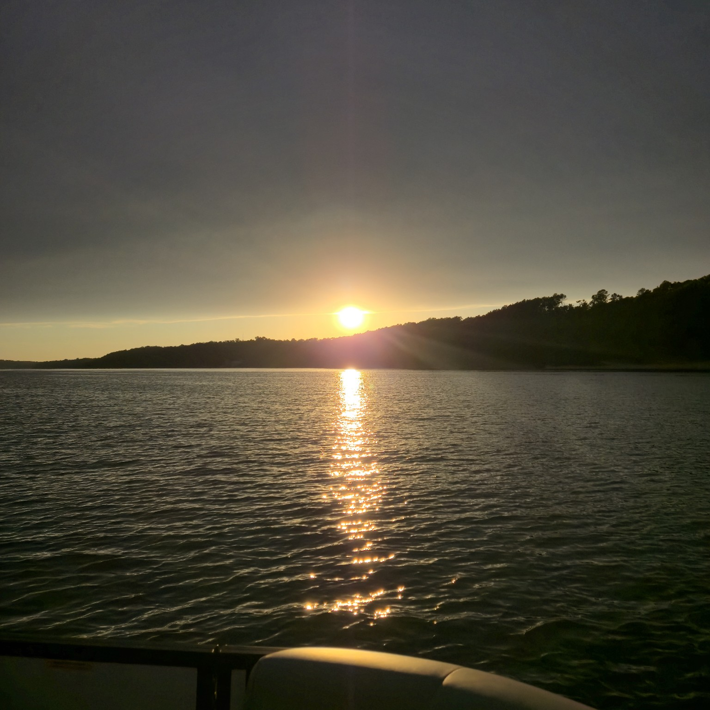
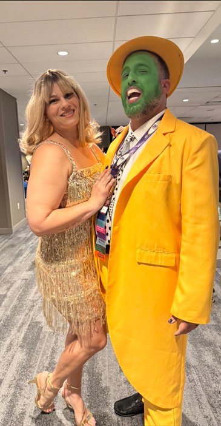
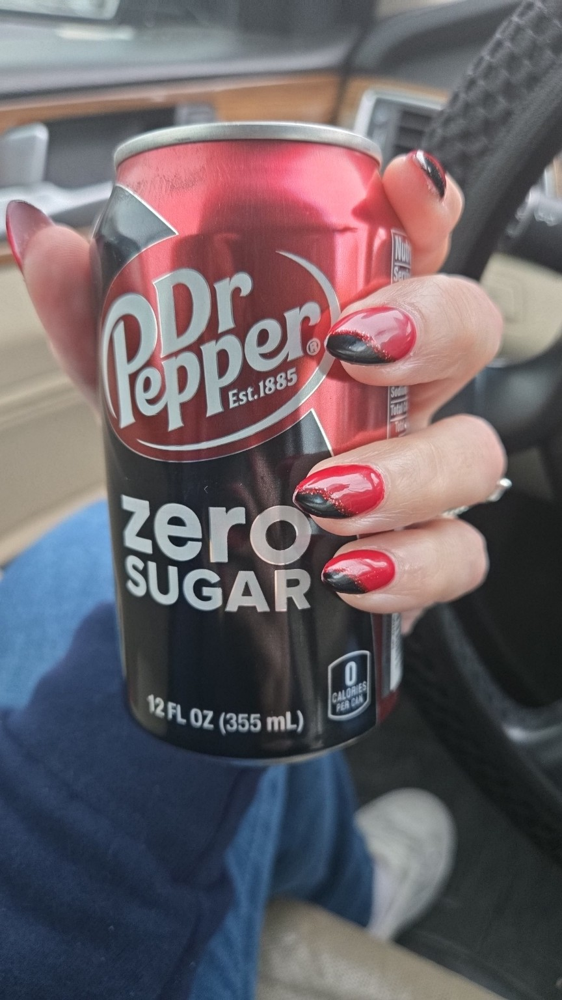
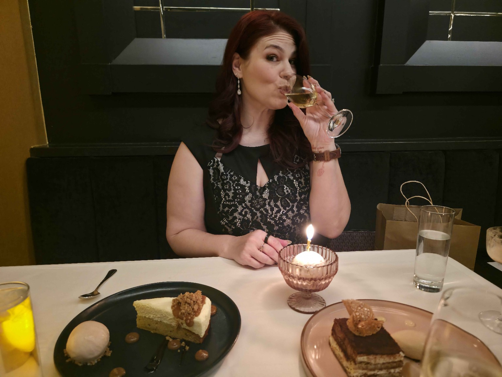
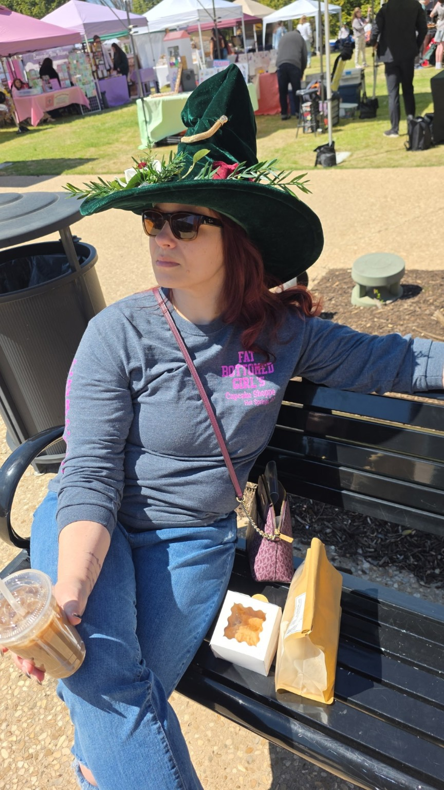
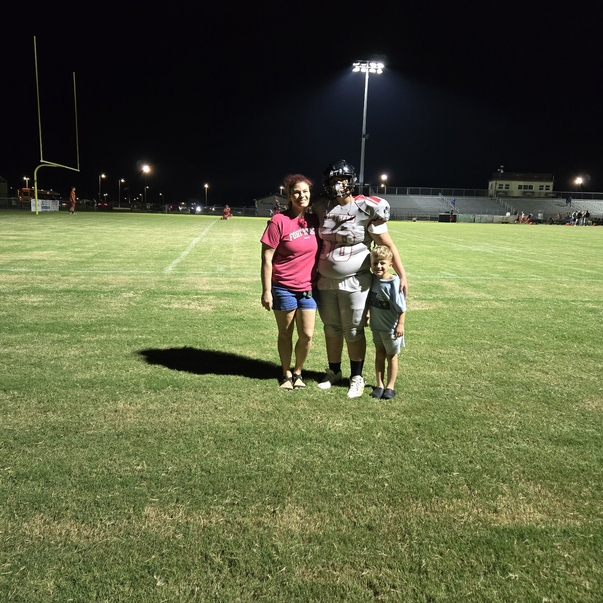
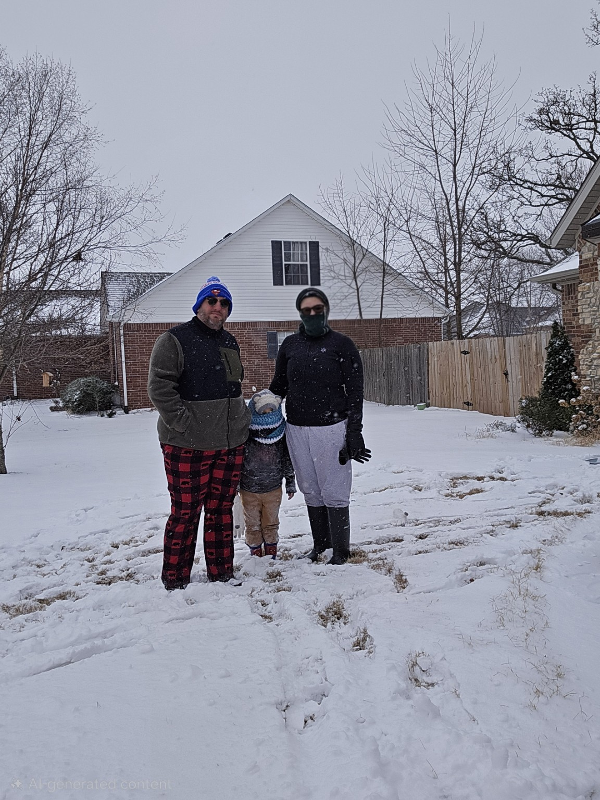
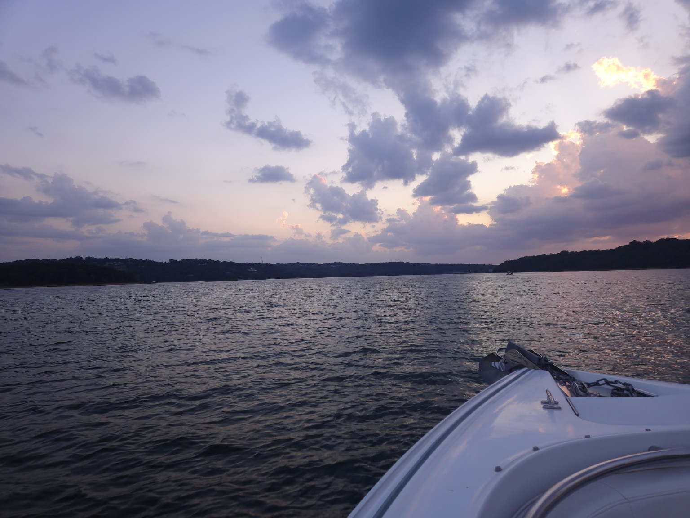

About
There’s more
to me than
the work.
I build solutions, ask a lot of questions, and care deeply about the people behind the work. I also bake, travel, collect projects, and will absolutely turn a casual idea into a whole thing.





The Non-Linear Story
My path was never a straight line.
I started with a music degree and a deep love for performance, creativity, and discipline. From there I found myself in retail, HR, learning, operations, strategy, and enablement—often in roles that didn’t exist yet, solving problems that didn’t come with instructions. Each chapter taught me something I still use today: how to understand people, navigate complexity, and build things that actually work.
Things I Believe
Some
non-negotiables.
Curiosity
Details
matter.
Most things
are fixable.
You can care
about both.
There’s always
room for dessert.

Currently
A snapshot
of right now.
- Reading
- A fantasy series (and anything about how things work)
- Learning
- More about AI, better baking techniques, and whatever my next hyperfocus becomes
- Making
- A cookbook from my husband’s grandmother’s recipes and an unnecessarily elaborate Excel file
- Watching
- Great British Bake Off
- Planning
- New York City (Jan 2027) and DragonCon 2027
- Listening To
- A mix of rock, soundtracks, and whatever hype song I need that day
- Overthinking
- Systems, itineraries, plot twists, and how to fit everything I want to do into one life

